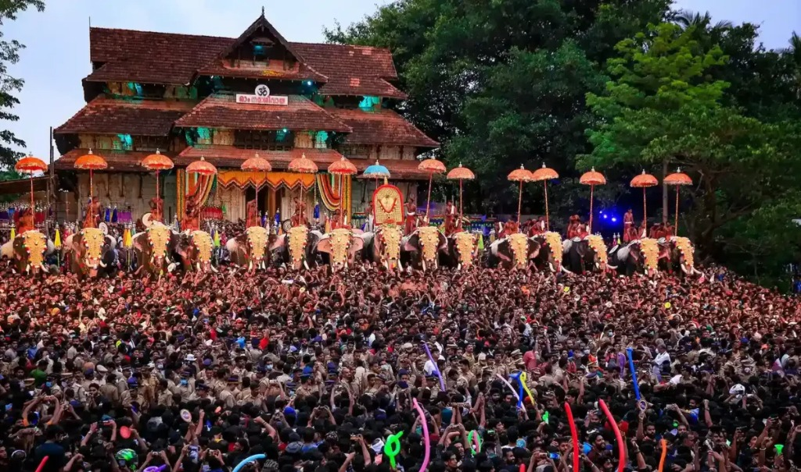

PRECISION SAFETY ARCHITECTURE
CrowdShield
Real-time crowd intelligence.
Before the tragedy.
Real-time crowd intelligence.
Before the tragedy.
Events are getting larger. Crowds are getting denser. And the systems have not kept up.
Every incident below was organised. Expected. Manageable. And still people died.
Across 11 incidents. Spanning 36 years.
All at organised events. All with management present.
Hundreds more incidents occur globally every single year — unreported, uncounted.
Each one of these was a person with a name.
Who came to celebrate.
Who did not come home.
Venue managers have no live picture of where crowds are building until it is too late.
Current systems respond after a disaster begins, not before the threshold is crossed.
Sensor feeds, thermal data, and crowd counts exist in silos with no single actionable dashboard.
mmWave radar, IR thermal, and RGB cameras placed across venue sections
AI processes all feeds in real time and maps crowd density per zone
When any zone crosses the set threshold, ranked alerts fire instantly to the operator
Dashboard shows safest exits, bottleneck zones, and recommended actions

Concerts, festivals, and sports venues managing thousands of attendees in real time.

Temples, shrines, and pilgrimage routes where surges are unpredictable and deadly.

Public gatherings, parades, and civic events with no current monitoring infrastructure.